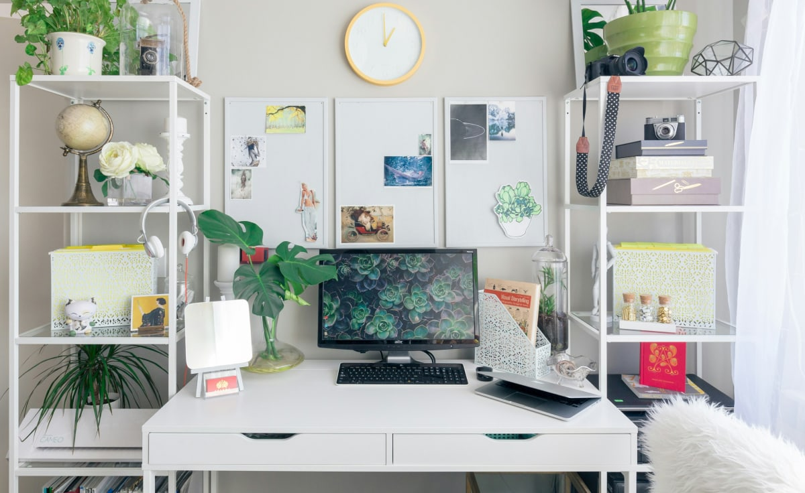

About Me
Hi, I'm Paulina! Ever since I can remember, I've had a passion for creativity and problem-solving. That's what led me to the world of front-end web development. There's something magical about seeing an idea come to life in the browser—whether it's a simple layout experiment or a complex interface for a bigger project.
When I'm not coding, I love getting lost in a good book. My taste is pretty eclectic: I'll happily read everything from fantasy novels to biographies of tech pioneers. Reading helps me unwind and often sparks new ideas for my coding projects.
Another big passion of mine is the great outdoors. Hiking allows me to disconnect from the digital world and reconnect with nature. I love challenging hikes with rewarding views at the top. And if I'm not on the trails, you might catch me rock climbing. The combination of mental focus and physical endurance is a perfect parallel to tackling tough coding challenges!
Some of my favorite books:
-
The Pragmatic Programmer
by Andrew Hunt and David Thomas (for helpful insights into software development) -
The Hobbit
by J.R.R. Tolkien (for a bit of fantasy fun) - Educated by Tara Westover (for incredible inspiration)
-
Ready Player One
by Ernest Cline (for some futuristic escapism)
I absolutely love my workspace as a place that inspires me to do my best work, so I thought I'd share it with you:
I hope this blog not only documents my growth but also helps others see that coding can be for everyone. Thanks for joining me on this journey!